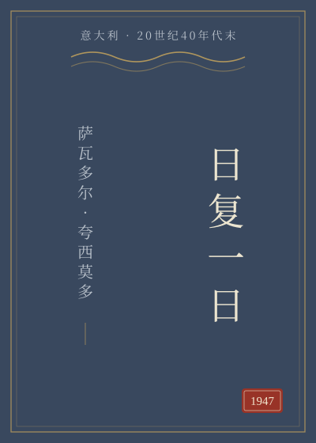
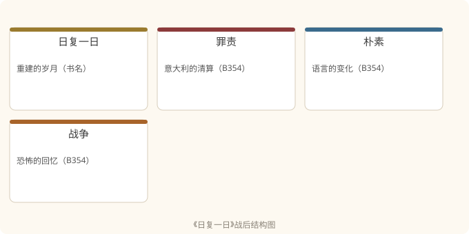

日复一日
一、基本信息
| 作者 | 萨瓦多尔·夸西莫多 |
|---|---|
| 成书/出版 | 1947年（Britannica B354：Giorno dopo giorno (1947)） Salvatore Quasimodo — Encyclopaedia Britannica（百科全书） |
| 国别/地区 | 意大利 |
| 时代 | 近代 · 20世纪40年代末 |
| 体裁 | 诗集 |
| 语言 | 意大利语 |

《日复一日》战后结构图（主题·结构图）
二、创作背景
Britannica（B354）：Giorno dopo giorno——战后转向之作——'Many of his poems recalled the injustices of the fascist regime, the horrors of the war, and Italian guilt.'
Britannica（B354）：夸西莫多——1959诺奖。
题材（通说待核）：战后社会诗——语言'朴素、意象具体直接'（B354）。
三、内容脉络
（通说待核）战后 Italy 的罪与哀。
（通说待核）'日复一日'：重建的岁月。
四、主要人物表
| 人物 | 身份 | 说明 |
|---|---|---|
| 抒情'我' | 战后诗人 | （B354 语系） |
五、主题与艺术特点
- 法西斯罪行的回忆（B354：injustices of the fascist regime）。
- 战争的恐怖与罪责（B354：horrors of the war, Italian guilt）。
- '朴素的语言'（B354：simple in language）。
六、影响与评论
- Britannica：Giorno dopo giorno (1947)（B354）。
Salvatore Quasimodo — Encyclopaedia Britannica（百科全书） - Britannica：1959诺奖（B354 交叉）。
Salvatore Quasimodo — Encyclopaedia Britannica（百科全书）
七、阅读建议
难点
- 战后政治诗。
- 与隐逸期的对照。
- 《日复一日》中译名待核。
- 意大利文原版。
夸西莫多战后篇；与《瞬息间是夜晚》对读。
八、待核实
- 篇目核对（B354未载）。
- 1947年出版细节待核。
- '转向'评价（B354）核对。